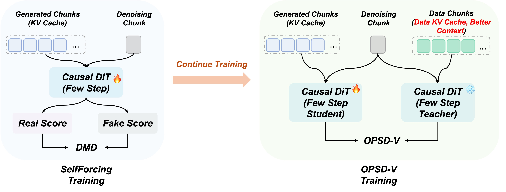

Less accumulated visual drift.
Comparison Gallery
We apply OPSD-V as continued post-training to both LongLive and Self-Forcing. Under matched prompts, seeds, samplers, and cache settings, the comparisons below show three complementary gains: reduced long-horizon visual degradation, stronger sustained motion, and improvements in both quality and dynamics. Both the base models and OPSD-V use attention sink during inference. Click any prompt below a video to read its complete long-form description, or use side-by-side fullscreen to inspect larger videos.
Stronger sustained motion.
Both benefits in one rollout.
Abstract
We propose OPSD-V, an on-policy self-distillation paradigm for post-training few-step autoregressive (AR) video diffusion models. Existing few-step AR video generators, often obtained through DMD-style distillation, can generate long videos with low latency, but still suffer from error accumulation and weakened motion dynamics during long autoregressive rollout. OPSD-V aims to further reduce long-horizon degradation and improve motion dynamics while preserving the original few-step inference path. Our key idea is to introduce real long-video data as temporal context during training and use it to provide dense trajectory-level supervision. Compared with relying only on a short-clip teacher distribution, real long videos offer a richer and cleaner target distribution for supervising long AR rollouts. Specifically, the student follows the exact inference-time rollout, generating each chunk conditioned on its own previously generated KV cache. In parallel, the teacher is evaluated at the same student-visited denoising states, but uses a cleaner AR-consistent temporal cache in which older history can be replaced by real-video context. To maintain autoregressive consistency and prevent the teacher from becoming a fully teacher-forced oracle, both branches share an initial real-video prefix, and the teacher keeps its most recent cache chunk generated by the model itself. This design provides dense denoising-level corrective targets under on-policy AR cache dynamics, without changing the sampler, number of denoising steps, or inference-time cache mechanism. We apply OPSD-V to representative few-step AR video models, including Self-Forcing and LongLive. Experiments show consistent improvements in visual quality, motion dynamics, and VBenchLong scores. Across 10 participants and 20 video pairs, OPSD-V is preferred over the base models in 66.0% of overall-preference judgments (82.5% excluding ties), demonstrating the effectiveness of on-policy self-distillation with real long-video context for long-horizon AR video generation.
Motivation
OPSD-V starts after few-step distillation: from a DMD/Self-Forcing-trained causal video generator, we continue training the same few-step model instead of changing its deployment-time sampler. The central difficulty is autoregressive cache degradation. Every generated chunk is written back into the KV cache, so its errors become part of the temporal state used to produce all later chunks.
Design principle
Keep the student on-policy. Give the teacher a cleaner view.
Training-free diagnostic
Cleaner cache improves LongLive before training.
Same checkpoint, same first GT chunk, same sampler. Left: original generated-cache rollout. Right: data-assisted cache rollout.
Example 01
Aerial beach scene
Original inference
Data-cache inference
GT reference
Improvement. Stronger motion dynamics, faster camera movement, and visibly cleaner background detail.
An aerial view of a beach on a clear day, with turquoise water, pale sand, coastal buildings, palm trees, and crowds along the shoreline.
Example 02
Motorcyclist gesture
Original inference
Data-cache inference
GT reference
Improvement. Stronger task dynamics in the rider's gesture, with more stable trees and background structure later in the rollout.
A person wearing a black T-shirt with the text "Bright Eyes" and a white helmet with a reflective visor is riding a motorcycle.
Example 03
Bird in rocky stream
Original inference
Data-cache inference
GT reference
Improvement. The grassy background remains much clearer instead of dissolving during the long rollout.
A small bird with dark plumage, likely a crow or raven, is seen in a shallow, rocky stream surrounded by lush greenery.
Example 04
Mountain village flyover
Original inference
Data-cache inference
GT reference
Improvement. Faster camera motion and cleaner, more coherent house structures across the village scene.
Aerial views of a traditional village nestled in a mountainous region, featuring white buildings with black roofs.
Example 05
Forested road aerial view
Original inference
Data-cache inference
GT reference
Improvement. Faster aerial motion, with trees and forest background becoming noticeably sharper and more stable.
The video provides an aerial view of a forested area with a winding road cutting through it.
1 / 5

Method
The student follows the exact deployment rollout. At each denoising state it visits, the teacher provides a corrective velocity target from a cleaner temporal context without replacing the student's trajectory.

Roll out on-policy
The student uses the original few-step sampler and writes its own generated chunks into the evolving KV cache.
Build a cleaner teacher context
Older history comes from real long-video chunks, while the latest generated chunk is retained for AR-consistent continuation.
Align velocity densely
Student and EMA teacher predict velocity at aligned noisy states. Each loss is backpropagated immediately to bound activation memory.
Quantitative
Average results over 240 one-minute videos from MovieGenBench and MeiBench. All methods use the same 1.3B backbone, few-step sampling path, and attention-sink cache mechanism.
| Method | Params | NFE | Quality | Dynamics | Semantic | User Pref. |
|---|
Human preference
User Study
We further conduct a user study with 10 participants. Each participant compares 20 paired videos, including 10 LongLive pairs and 10 Self-Forcing pairs, and answers three questions: overall preference, motion quality, and visual quality. Participants choose OPSD-V, Base, or Same when no perceptible difference is observed.
LongLive
Motion
Quality
Quality
Visual
Quality
Quality
Overall
Self-Forcing
Motion
Quality
Quality
Visual
Quality
Quality
Overall
Aggregated over both backbones, OPSD-V is preferred in 66.0% of overall comparisons, or 82.5% after excluding ties. Users also favor OPSD-V for motion quality (57.5%, 82.7% excluding ties) and visual quality (60.5%, 78.1% excluding ties).
Ablations
Two implementation choices are decisive: supervise velocity rather than reconstructed x0, and keep the denoising trajectory student-induced. Use side-by-side fullscreen on each ablation pair to inspect the larger videos.
Match velocity, not reconstructed x0.
Velocity supervision better preserves fine structures and long-horizon clarity. Each clip below shows only the first 25 seconds for faster inspection.
Example 01
Long bridge construction
x0 Loss
Velocity Loss
Example 02
Train crossing a bridge
x0 Loss
Velocity Loss
Keep the student trajectory on-policy.
Training debug rollouts show the mismatch directly: the teacher branch remains coherent, while the student collapses into blur when supervised along teacher-induced states. Each clip shows the first 5 seconds.
Example 01
Training rollout
Student
Teacher
Example 02
Training rollout
Student
Teacher